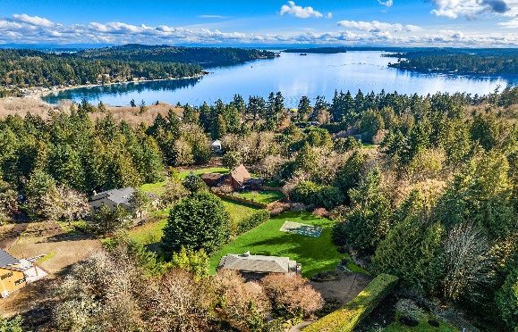

Bainbridge Island · guest trail guide
From a 20-minute ravine to a hidden beach to a three-mile lake loop. Our favorite forest, shoreline and garden trails, with what you'll see and how long to allow.
Pick by mood or time. Each card jumps to the full trail notes, map and directions.